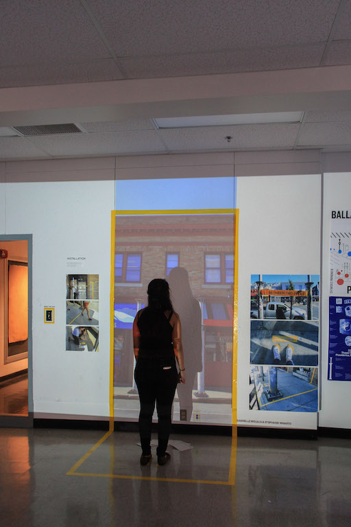
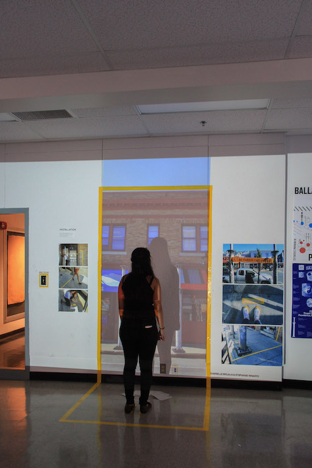

gabrielle widjaja is
a graphic designer.


gabrielle widjaja is
a graphic designer.
This project was created for Design Studio III at RISD under the instruction of Jacek Mrowczyk in the fall of 2017.
How does place lead to story?
This assignment prompts the designer to engage critically with place. Analysis of a place leads to story; story leads to intervention or installation. Intervention/installation leads to documentation and presentation.
This project was created in collaboration with Stephanie Winarto!
Choose a place.
A place in Providence was to be chosen and studied; we chose the two heating poles on Thayer Street (highlighted in yellow). A seemingly random place where we both found meaning. There were a lot of stickers and ripped posters stuck to the poles. These remnants showed change through the passage of time. Most interesting was the fact that this was a place of passing-by; a place no one really paid attention to.
Analysis of this site included considering the people that went there, the site's form, use, and history, and deriving meaning and ideas from research. These stickers were a large part of our research; this place meant nothing to most people, but it pointed in the direction of countless other places and people never notice.
Part I : Create Two Posters.
One poster was to be informational pertaining to the site, and the other was supposed to be an abstraction of the site.
Pictured on left are my informational poster and abstract posters.We envisioned the poles as a real directory on which people could find information about countless other places in Providence. Research showed that each of these stickers pointed to mundane and bizarre things such as smoke shops, online cults, music collectives, and non-profits.
Part II : Intervention/Installation
Our last step was to create some sort of intervention at the site, or create a proposal for one within the graphic design building at RISD. We took to the actual site and made mockups of our ideas. Essentially, we wanted to do outrageous things at the site. What could happen between two poles that would transform it from a space into a place?
Pictured are several ideas that we had.
The Final Installation
The time constraint on the assignment allowed for only one of our mockups to be done in real life. We made a large banner that read, "BETWEEN TWO POLES" and by labeling a space, we transformed it into a place. "YOU ARE NOW STANDING BETWEEN TWO POLES" and footsteps were also placed on the ground using vinyl cuts. Lastly the space was taped in yellow for definition. Sadly, the installation was forcibly removed a few hours later.
 

Documentation
The very last step was to bring the installation/intervention back to the classroom for critique. We recreated our site by projecting an image of it onto the wall, outlining in yellow tape and adding footprints on the ground to mirror the installation, and distributing small zines full of our initial mockups. Surrounding were printed pictures of our site as well as our posters from part I.